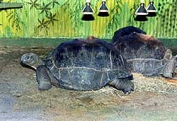

De Seychellen-Reuzenschildpad heeft een sterk gewelfd rugschild.
De kleur hiervan is donkergrijs tot zwart. Hun nek is tamelijk lang. Dit is
vooral handig bij het vergaren van voedsel; het bereik wordt groter.
Op de voorpoten zitten dikke, benige schubben/schilden. De achterpoten lijken
wel wat op die van een olifant. De kop is wat smal en puntig en nauwelijks
dikker of breder dan de nek.
Mannetjes kunnen een gewicht bereiken van ca. 250 kilo en een schildlengte
tussen 100 en 120 cm. De lengte van de vrouwelijke dieren blijft gewoonlijk
onder de 90 cm en het hoogst gemeten gewicht was 167 kilo. Deze gegevens gelden
voor de in de vrije natuur levende dieren op Aldabra. Dieren die op de andere
eilanden als huisdier gehouden worden soms groter en zwaarder. Seychellen-Reuzenschildpadden
kunnen wel 100 tot 150 jaar oud worden.
Van de volgende
website:
Biology4all
heb ik drie foto's geleend van Esmeralda



Op Bird-Eiland leeft het grootste exemplaar. Zijn naam is Esmeralda. In het Guiness Book of Records staat beschreven dat hij 304 kilo weegt en in 1997 maar liefst 204 jaar oud was. Dit maakt hem waarschijnlijk tot het oudste dier op aarde. Of hij nu (2002) nog leeft heb ik (nog) niet kunnen achterhalen.